Vontela Sanjay Kumar
Building Image Classifier
Overview
This is a Deep Learning where we need to classify images using an image classification technique. Image classification is a process of classifying images into respective classes. For this challenge we are using dataset from Kaggle. The dataset only contains two dimensions one is image and other is class where class is the name of the expression. I have downloaded the dataset using the link https://www.kaggle.com/datasets/samaneheslamifar/facial-emotion-expressions . The classes in the dataset are Angry, Neutral, Sad, Disgust, Happy, Fear, Surprise. The dataset is divided into 2 parts one is for training and one is testing. I have further divided the training data into 2 parts 80% of that data is for training and 20% is for validation
I have converted the images to Grayscale for increasing training speed. As grayscale has only one dimension instead of 3 for RGB it increases the training speed. I have used a CNN model for training images. Using total FC layers instead of CNN may lead to overfitting so I used CNN model. For new model I used 6 Convolution layers, 3 pooling layers and 3 fully connected layers, Relu as activation function and Adam Optimizer with initial learning rate of 0.001, With this model I got an accuracy if 58% on test data.
Code
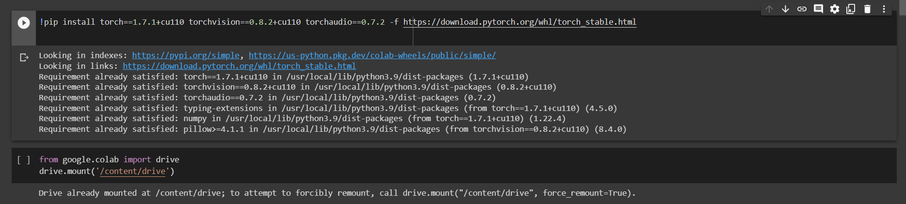 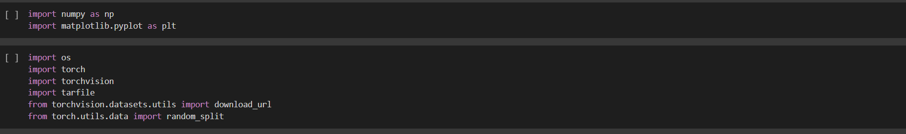 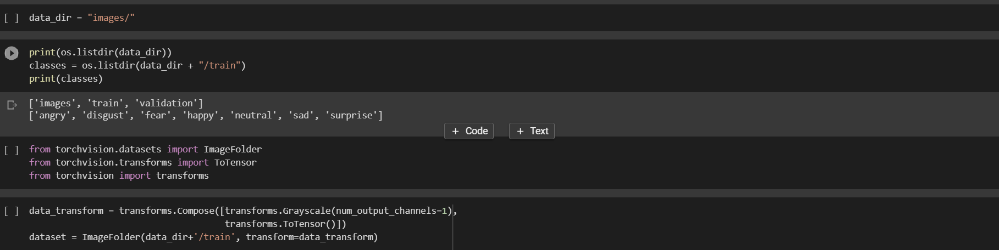 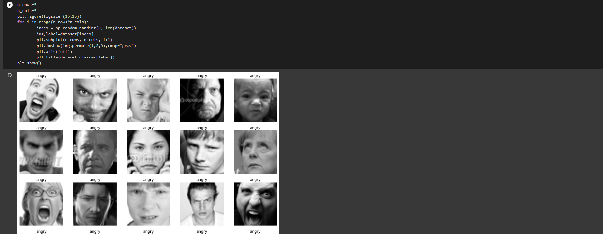 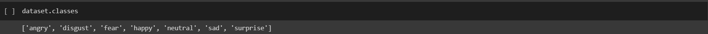 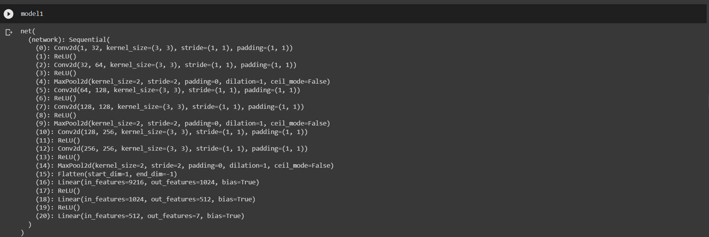 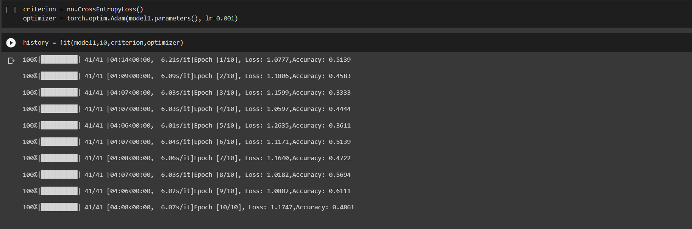 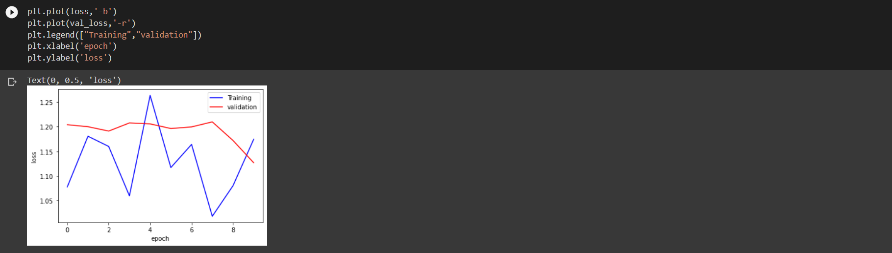 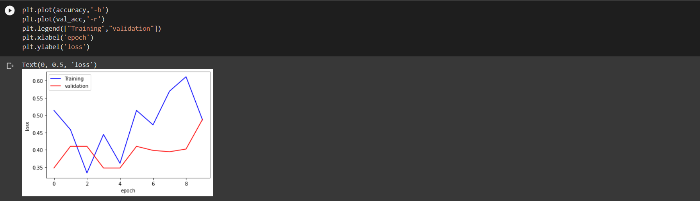 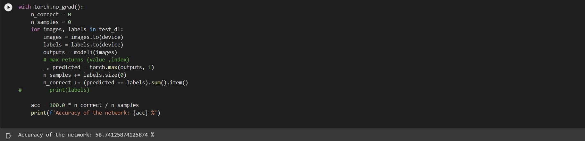Model Tuning
58% accuracy on test data is good but I want to improve that so I tried to rebuild a new model with new parameters and adding new layers to it. The new model contains 6 convolution layers,3 pooling layers , 3 dropout layers and 3 Fully connected layers. Dropout layers removes connections between neurons. Using dropout reduces the chance of overfitting and helps increase accuracy. Using the new model I got an accuracy of 74% on test data.
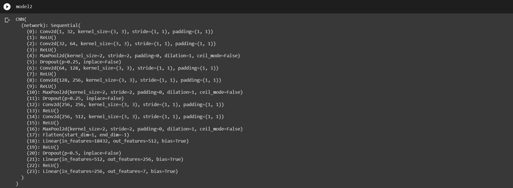 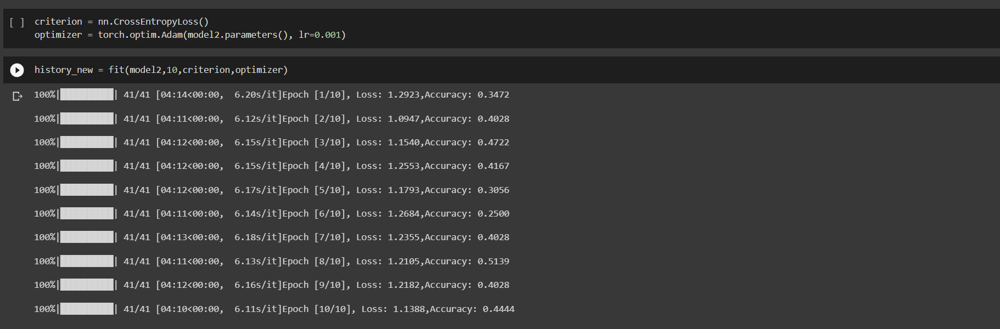 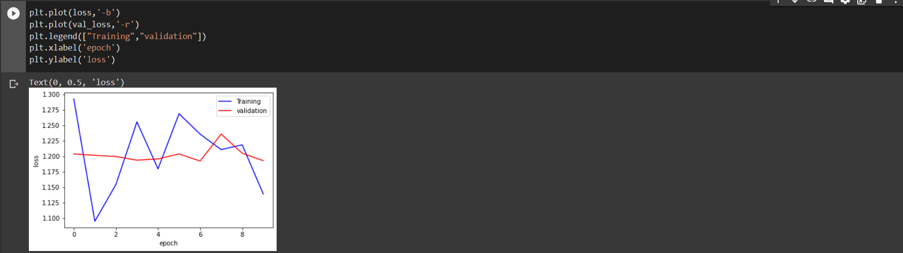 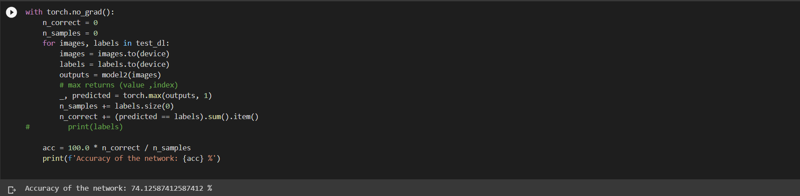
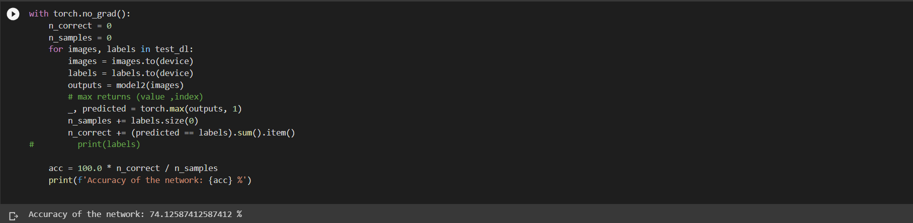
Algorithm
My algorithm contains a 2 convolution layer with relu activation function and a pooling layer. Convolution layer reduces the size of image using the formula ((input_size+2)*padding_size-(filter_size-1))/stride. Max pooling is used to downsample the feature map created by convolution layer, in the final steps the feature map created by convolution and pooling is down sampled and flattened for fully connected layers. In FC layer each input is connected to all neurons.
Challenge
The main challenge is increasing the accuracy of the model1. The model1 only got 58% to increase the accuracy of the model I used dropout and changed in_channels and out_channels. Adding dropout will remove some neuron connections doing that will stop overfitting and improve accuracy.
Reference
- Deep Learning with pytroch: zero to GANs
- pytorch.org/tutorials/beginner/ptcheat.html